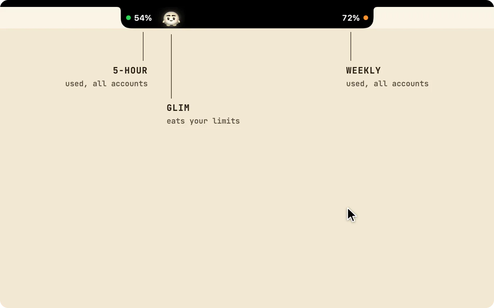
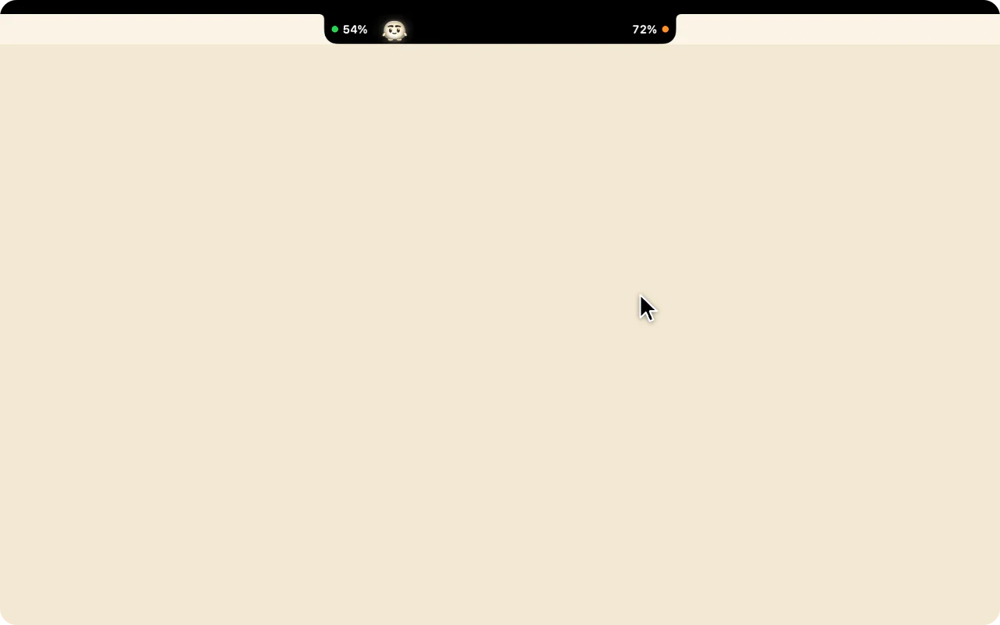
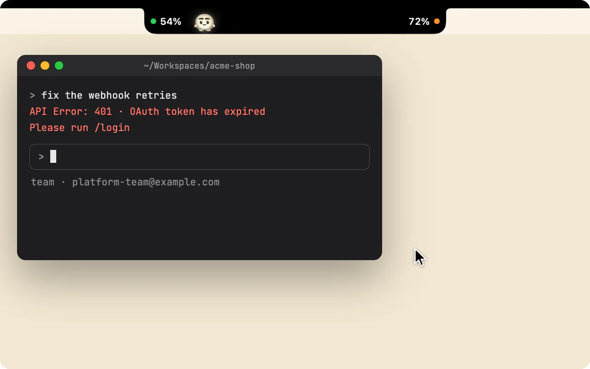
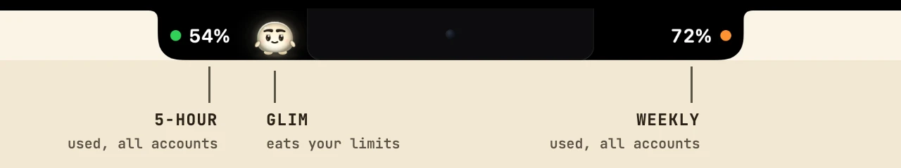
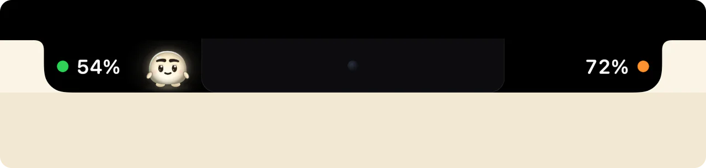
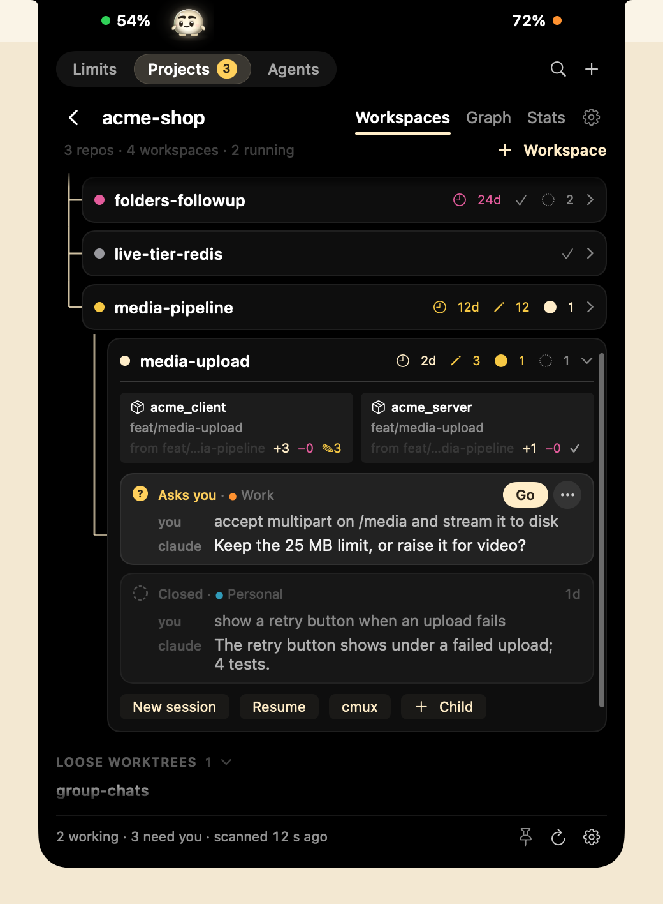
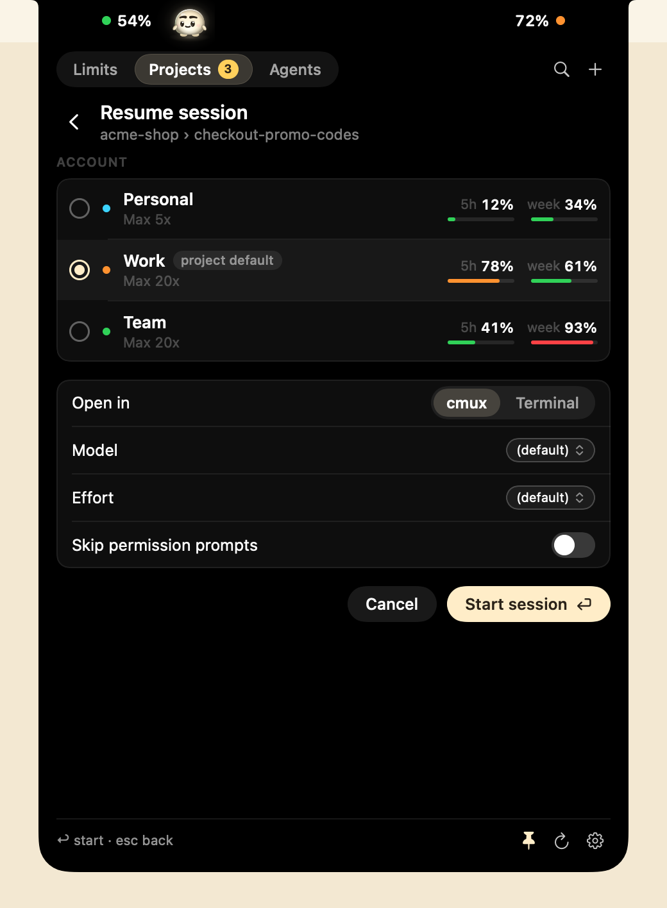
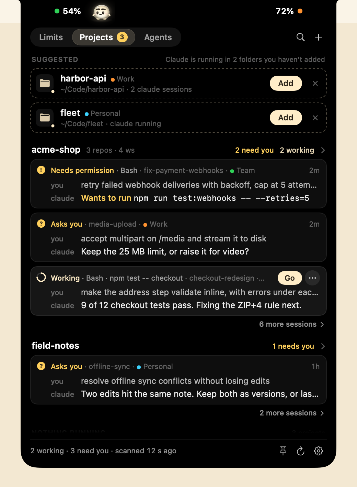
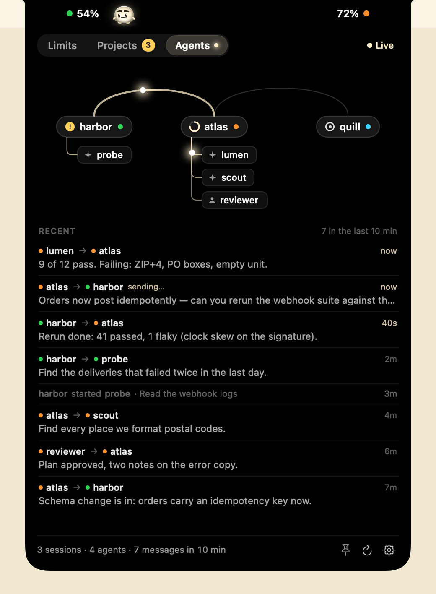

所有 Claude Code 账号的额度，都在 MacBook 刘海里
Brow 是一款免费开源的 macOS 应用，用来查看 Claude Code 的用量限额：以已用百分比显示每个账号的 5 小时限额、每周限额和特定模型的每周限额（如有），并显示每项限额何时重置。只有一个账号也能用（Brow 会自动找到 ~/.claude），也支持多个账号。同一个面板里的 Workspaces 则在拆分为多个仓库的产品上运行并行的 Claude Code 会话。应用界面为英文。
或者用 Homebrew 安装：brew install --cask efim0v/tap/brow

哪个 Claude 账号还有余量，额度何时重置
有多个账号时，Brow 让你一眼看出哪个账号快到限额、哪个还有余量、各自何时恢复。
重置时间与重置日历
每项限额都会显示何时重置：不到一天时显示倒计时，如“resets in 3 h 12 min”；超过一天则显示日期和时间，如“resets 22 Sep 02:00”。
日历上标出了每个账号的每周重置日和预计的订阅续费日。把指针移到某一天上，就能看到那天有哪些额度会恢复。

在账号自己的浏览器配置文件中重新登录
某个账号的登录过期后，点一下它旁边的按钮，就会为该账号运行 claude auth login，并打开属于它的浏览器配置文件，其中已经登录了这个账号。其他账号的登录状态不受影响。

刘海两侧的两个数字，或其他显示器上的胶囊
收起时，Brow 显示你的所有账号总体上用掉了多少 5 小时限额和每周限额。每个数字旁的圆点在达到 70% 时变成橙色，达到 90% 时变成红色。指针悬停时，面板就会展开。
这两个读数也可以放到刘海下方的横条里。在没有刘海的显示器上，Brow 改为显示一个胶囊。

Settings 中的所有账号
Settings → Accounts（设置 → 账号）列出每个账号的邮箱、套餐、文件夹、令牌状态和启动命令。Sign in… 可以再添加一个账号：Brow 会创建文件夹，并在“终端”中打开 Anthropic 自己的登录流程。

Glim：一只吃限额的小宠物
Glim 住在刘海旁、5 小时限额读数边上的那片黑色里，你的账号用掉什么，它就吃什么。5 小时限额的数字一上涨，就会有一粒光珠从数字里蹦出来，飞向 Glim，被它吃掉。数字本身保持不变。
它的光就是它的饥饿条
吃饱时，Glim 亮亮的；饿了，光就暗下来。你在 Mac 前好几个小时都没用 Claude Code，它就会饿，再久就会饿坏，但饿着的 Glim 只会满怀期待，从不难过。喂得太多，它会撑得圆滚滚，拍拍自己的肚子。
你离开 Mac 十分钟，它就会打起瞌睡；你不在的时候，它从不变饿。

- 限额用完，就睡一觉
- 5 小时限额用完时，Glim 吃饱睡着，嘴角带着一丝微笑，直到窗口重置。每周限额用完时，它躲进摄像头后面的小窝里冬眠，到每周重置时再出来。
- 跟着你进入面板
- 把指针悬停在刘海上，Glim 会跳进面板的标题行，旁边是它的状态、上一顿饭和饥饿条。它的眼睛会跟着指针转，点它一下，就像轻轻碰了碰它的鼻尖。
- 从不碍事
- Glim 从不遮挡任何数字，不发声，也不发通知。它只在你看得见时才绘制，并遵循“减弱动态效果”设置。默认开启；在 Settings → General → Show the pet 中可以关闭。
- 什么都不外传
- Glim 不向任何地方发送数据，也不读取任何转录。为了在你启动 Claude Code 时打起精神，它只请 macOS 在某个账号的
history.jsonl被写入时通知它，从不打开这个文件。
Brow 能为每个账号做什么
- 所有账号一目了然
- 每个账号显示 5 小时限额、每周限额，以及特定模型的每周限额（如有），均以已用百分比表示，并附上距离各自重置还剩多久。
- 重置日历
- 在月历上标出每周重置日和预计的订阅续费日，哪个账号什么时候恢复，一看便知。
- 限额预警
- 开启后，账号用到某项限额的 80% 和 95% 时，Brow 会发出 macOS 通知；每个阈值在限额重置前只提醒一次。默认关闭。
- 复制“我的一周”
- 面板底部的一个按钮可以把各账号的限额复制成一张图片，直接粘贴到聊天或帖子里。除非你选择显示名称，图片上的账号只显示编号，也不会出现邮箱。
- 复制启动命令
- 一个按钮即可复制以该账号身份启动 Claude Code 的命令。
- 在账号自己的浏览器里
重新登录 - 每个账号都有独立的浏览器配置文件，Cookie、历史记录和已保存的登录信息互不相通，登录一个账号绝不会影响另一个。第二个按钮可以直接打开这个配置文件。
- 一键添加账号
- Brow 会创建账号文件夹，并打开 Anthropic 自己的登录流程。
- 令牌保持有效
- Brow 在后台为每个账号续期令牌，所以数字不会过时；账号中开着 Claude Code 会话时也是如此。正在工作的会话可以先自行续期。
- 每 30 秒检查一次
- Brow 每 30 秒检查一次限额；Mac 唤醒或网络恢复时会再检查一次；指针悬停时，如果屏幕上的数字已超过 30 秒没有更新，也会重新检查。面板会显示这些数字是多久之前的。
独立的浏览器配置文件需要 Google Chrome、Chromium、Brave 或 Edge。如果都没有，链接会在默认浏览器中打开，不做隔离。关于请求节奏、刷新和布局选项的更多细节，见 Brow 详解（英文）。
在一台 Mac 上使用多个 Claude Code 账号
Claude Code 把每个账号放在各自的配置文件夹中：默认账号用 ~/.claude，其他账号可以用你通过 CLAUDE_CONFIG_DIR 指定的任意文件夹。想同时登录多个账号（例如一个工作账号、一个个人账号），Anthropic 的文档给出的就是这个办法。
Brow 读取 ~/.claude 以及 ~/.claude-accounts/ 中的每个文件夹。在 Settings → Accounts 中，Sign in… 会创建下一个可用的文件夹 ~/.claude-accounts/account-N，并在“终端”中为它运行 claude auth login；Existing folder…（已有文件夹）则用来添加一个你已经在用的文件夹。之后每个账号都有一个按钮，可以复制它的启动命令，例如 CLAUDE_CONFIG_DIR='…' BROWSER='…' claude，这样 Claude Code 就会以该账号的身份启动，并在该账号的浏览器配置文件中打开链接。
每个文件夹各自保存登录信息。Claude Code 把它存放在 macOS 钥匙串中，名称与文件夹对应：~/.claude 对应 Claude Code-credentials，其他文件夹对应 Claude Code-credentials-<hash>。关于你所用套餐的规定，请查阅 Anthropic 的消费者条款（Consumer Terms）。
详细步骤见指南《在一台 Mac 上使用多个 Claude Code 账号》（英文）。某个账号的限额用完时，Workspaces 可以把会话挪到另一个账号上：见指南《切换账号后继续同一个 Claude Code 会话》（英文）。
如何查看 Claude Code 额度：Brow 与 /usage、ccusage 及菜单栏工具对比
查看 Claude Code 用量的方式有好几种。表中前三行出自 Anthropic 的文档，其余各行出自各工具自己的网站或 README。
| 工具 | 显示内容 | 所在位置 | 同时查看多个 Claude 账号 | 其他服务 | 平台 | 许可证与价格 |
|---|---|---|---|---|---|---|
Claude Code 中的 /usage |
当前登录账号的套餐用量条 | Claude Code 内 | 否：只显示会话所用的账号 | — | 凡是 Claude Code 能运行的平台 | Claude Code 自带 |
| claude.ai 的 Settings → Usage | 当前登录账号的用量 | 网页版、Claude Desktop | 否 | — | 浏览器、Claude Desktop | Claude 自带 |
状态栏中的 rate_limits |
5 小时和 7 天的已用百分比与重置时间，供你自己的状态栏脚本使用；仅限 Pro 和 Max | Claude Code 状态栏 | 否：只显示会话所用的账号 | — | 凡是 Claude Code 能运行的平台 | Claude Code 自带 |
| ccusage | 本地用量日志中的 token 用量和估算费用 | 终端 | 未说明 | Codex、OpenCode、Gemini CLI 等 | 未说明 | MIT，免费 |
| Claude Code Usage Monitor | 在终端中监控 token、消息数和费用，并给出预测 | 终端 | 会扫描多个配置文件夹；未提到并排显示 | 未说明 | Python 3.9+；提供 macOS、Linux 和 Windows 的安装命令 | MIT，免费 |
| CodexBar | 按服务分别显示用量窗口、积分、费用和重置时间 | macOS 菜单栏，另有 CLI 和小组件 | 未说明 | 很多，包括 Codex、Cursor 和 Gemini | macOS 14+；CLI 也支持 Linux | MIT，免费 |
| Claude Tracker | Claude 的 5 小时、每周和按模型的用量；达到阈值时发出通知 | 菜单栏，另有刘海处的 HUD | 是，“every account at once” | 未说明 | macOS 14+，Apple 芯片和 Intel | MIT，免费 |
| Usage4Claude | Claude 和 Codex 的 5 小时、每周及额外用量；通知 | 菜单栏 | 支持多个账号，在菜单栏中切换 | Codex | macOS 13+，Intel 和 Apple 芯片 | MIT，免费 |
| ClaudeBar | 多种 AI 编程工具的配额；达到警告线及重置时发出通知 | 菜单栏 | 未说明 | 很多，包括 Codex、Gemini 和 Copilot | macOS 15+ | Apache-2.0，免费 |
| Brow | 每个账号的 5 小时限额、每周限额和特定模型的每周限额；重置时间；重置日历；每个账号一个浏览器配置文件；限额预警 | MacBook 刘海两侧；其他显示器上显示为胶囊 | 是，并排显示 | 仅限 Claude | macOS 26+，Apple 芯片 | GPL-3.0，免费 |
以上信息核对于 。“未说明”表示该工具自己的页面没有提到。Claude Tracker 是 Claude Usage Tracker 的新名称。
- 想在 Claude Code 里直接看数字：用
/usage；Pro 和 Max 用户也可以用状态栏脚本。 - 想看 token 用量和费用报告：ccusage。
- 想要带预测的终端仪表盘：Claude Code Usage Monitor。
- 同时在用 Codex、Gemini 或其他服务：CodexBar 或 ClaudeBar。
- 用的是 Intel Mac 或较旧的 macOS：Usage4Claude（macOS 13+）或 Claude Tracker（macOS 14+）。
- 想在刘海处并排查看多个 Claude 账号，还想要重置日历和每个账号独立的浏览器配置文件：Brow。
Brow 自身的局限：只支持 Claude；需要 macOS 26 或更高版本，且预编译版本仅支持 Apple 芯片；构建未经公证，所以首次启动需要点击仍要打开。
Workspaces：在多个仓库上运行并行的 Claude Code 会话
Brow 告诉你哪个账号还有余量，Workspaces 把工作挪过去。它是刘海面板中的 Projects 和 Agents 两侧，通过面板顶部的切换器打开：原本是独立应用的 Grove，现在已是 Brow 的一部分。
当 Claude Code 能在一个文件夹里看到整个产品时，它的效果最好。而产品一旦拆分在多个仓库中，并行的会话就会在分支上互相绊脚：一个会话在服务端仓库里切换了分支，另一个正在开发别的功能的会话，看到的代码就突然不对了。Workspaces 为每个功能准备一个文件夹，里面放着你选中的每个仓库的 git worktree，全部处于同一个分支。Claude Code 在这个文件夹中启动，能看到整个产品，任何会话都切换不了另一个会话脚下的分支。
所有仓库同一个分支
新建工作区只需一个名字和一次点击。Brow 会在每个仓库中运行 git worktree add，按你的模板（默认是 feat/{name}）给分支命名，放入 CLAUDE.md 等共享文件，并运行你配置的创建后钩子。一个工作区还可以从另一个工作区分出来；每个工作区都会显示它的分支、未提交的改动和 Claude Code 会话。
Graph 和 Stats 两个标签页显示每个仓库的提交图，以及整个项目的代码行数。

把会话挪到还有余量的账号
每个会话都有一个菜单。Resume as 不复制任何东西，直接以另一个账号继续会话；Copy to account 把会话完整复制过去，即使目标账号正在使用中也可以；Share with all accounts 让所有已关联的账号都能看到它。
每个账号选择器都会显示该账号最近一次在刘海中读到的 5 小时和每周用量，名称与你在 Settings → Accounts 里给它起的名字一致。

每个会话最后说了什么
Projects 按状态列出每个 Claude Code 会话，例如等待权限、向你提问、正在工作或轮到你，并显示你最近的提示词和 Claude 最近的一行回复。需要你处理的排在最前，切换器上的数字就是它们的数量。Claude Code 正在运行、但还不是项目的文件夹，会被建议添加为项目。
预览取自每份转录的末尾，不会离开你的 Mac。Settings → Workspaces → Show message previews 可以在你共享屏幕时关闭预览。

谁在和谁对话
Agents 画出这台 Mac 上的 Claude Code 智能体之间的消息往来：会话之间以弧线相连，每个会话下面是它的子智能体和智能体团队成员，每条消息都是一道从发送方跑向接收方的光。图下列出最近十分钟的消息。
它只读取 Claude Code 本来就会写下的内容，只在面板打开时读取，从不加入任何对话。

- 在哪里打开
- 在刘海面板里：Workspaces 开启时，面板顶部有一个切换器，可在 Limits、Projects 和 Agents 之间切换。在你于 Settings → Workspaces 中开启它并添加项目之前，Workspaces 一直处于关闭状态。Brow 菜单中的 Show Projects，以及从访达或聚焦搜索再次打开 Brow，都会直接把面板打开到 Projects。
- 命令行工具
brow - 包含
scan、workspaces、sessions、create、graph和doctor命令，每个都支持--json。用brew install efim0v/tap/brow-cli安装。它还以grove作为第二个名字，所以为 Grove 命令行工具写的脚本无需修改即可继续使用。 - cmux 或 Terminal.app
- 会话在 cmux（推荐）中打开，也可以通过 New session 和 Resume with options 表单在 Terminal.app 中打开。工作区就是一个普通文件夹，所以你也可以从任何终端在里面启动 Claude Code。
- 从 Grove 迁移
- Brow 会找到你在 Grove 中的项目、账号和设置，并在 Workspaces 中运行它们。请先退出 Grove.app：它运行期间，Workspaces 会等待。有哪些变化。
详细步骤见指南《让 Claude Code 同时处理多个仓库》和《切换账号后继续同一个 Claude Code 会话》（均为英文）。更多内容见 Workspaces 详解（英文）。
在 Mac 上安装 Brow
-
安装 Brow
用 Homebrew 安装：
brew install --cask efim0v/tap/brow也可以从最新版本下载 Brow.zip，解压后把
Brow.app移到/Applications。命令行工具
brow可以用brew install efim0v/tap/brow-cli安装，也可以从同一个发行版下载brow-cli.zip。无论哪种方式，你都会同时得到grove，它是同一个工具的第二个名字。 -
允许首次启动
该构建使用 ad hoc 签名，未经 Apple 公证，所以无论用哪种方式安装，macOS 都会拦下首次启动。
打开系统设置 → 隐私与安全性，在“安全性”下找到关于 Brow 的提示，点击仍要打开（Open Anyway），然后输入登录密码确认。启动被拦下后，这个按钮大约会保留一小时。
-
在刘海里找到它
Brow 没有程序坞图标：把指针悬停在刘海上即可打开面板。面板上的 ⚙ 用来打开 Settings，Launch at login（登录时启动）在 Settings → General 中。
如果 macOS 不让 Brow 读取某个账号的钥匙串项目，该账号会显示一把橙色钥匙。点击它，然后选择始终允许（Always Allow）。
要开始使用 Workspaces，请打开 Settings → Workspaces，开启它并添加一个项目。之后面板里 Limits 旁边会出现 Projects 和 Agents。
Brow 采用 GNU GPL v3 许可证；0.2.0 及更早的版本以 MIT 许可证发布。源代码、发行版和问题反馈都在 GitHub 上。
Brow 会在你的 Mac 上做什么
- 从钥匙串读取你的令牌
- Brow 从 macOS 钥匙串读取每个账号的 Claude Code 登录令牌，只用它调用 Anthropic 在
api.anthropic.com上的用量（usage）和个人资料（profile）接口。这些接口并非有公开文档的 API，可能会发生变化。 - 没有统计分析，也不检查更新
- 令牌不会写入磁盘，也不会记入日志，任何数据都不会发往别处。
- 备用令牌刷新默认开启
- 如果常规刷新失效，Brow 会运行一个很小的
claude -p请求，这会消耗少量额度，并开启该账号的 5 小时窗口。可在 Settings → Accounts 中关闭。 - 每个账号一个浏览器配置文件
- 每个配置文件都是
~/Library/Application Support/Brow/browser-profiles/下的一个单独目录。Brow 会设置配置文件的名称，并在其中允许第三方 Cookie，以便登录正常进行。 - 登录时会打开“终端”
- 登录时会在“终端”中运行
claude auth login，macOS 会询问一次是否允许 Brow 控制“终端”。 - 保存在磁盘上的设置和读数
- Brow 把自己的设置和最近的读数保存在
~/Library/Application Support/Brow中。它还在~/Library/Application Support/Grove/oauth-usage-ledger.json中保存一份用量接口的请求节奏记录，其中包含每个账号最近一次的读数；这个文件夹属于 Grove，而 Grove 现在已是 Brow 的一部分。 - Glim 留意提示词，但不读取它们
- 开启 Glim 后，Brow 会请 macOS 在每个账号的
history.jsonl被写入时通知它，好让 Glim 在你开始使用 Claude Code 时打起精神。Brow 从不读取这个文件。Glim 自己的状态（例如它的饥饿程度和它吃饱的日子）保存在~/Library/Application Support/Brow/pet.json中。 - Workspaces：只在你开启后才运行
- 只有为某个账号开启状态栏捕获后，它才会修改该账号的
settings.json；它会在你的仓库中运行 git、控制 cmux，并且只有在你开启后才会保留转录安全网。为了显示正在运行的内容，它会读取 Claude Code 的会话记录、每个会话转录的末尾，以及在面板打开时智能体之间互发的消息；这些内容都不会离开你的 Mac。完整列表见 README。
Brow 是一个独立工具，与 Anthropic 没有关联，也未获 Anthropic 认可。
关于 Brow 和 Claude Code 额度的常见问题
怎么查看 Claude Code 额度？
在 Claude Code 中运行 /usage，Pro 和 Max 订阅用户能在那里看到套餐用量条。在 claude.ai 或 Claude Desktop 中，打开 Settings → Usage。这两处显示的都是你当前登录的账号。Brow 则同时显示所有账号的每项限额及其重置时间。
Claude 每周额度什么时候刷新？是周几？
每周限额每周重置（刷新）一次，星期几和时间与该账号往常相同。Brow 会显示每个账号的下一次重置：不到一天时显示倒计时，否则显示日期和时间，例如“resets 22 Sep 02:00”。重置日历把所有账号的每周重置日放在同一张月历上。
Claude 5 小时限额是怎么重置的？
付费套餐有一个每 5 小时重置一次的会话限额。Brow 会显示每个账号已经用掉了其中多少，以及距离重置还有多久。
“You’ve hit your session limit”是什么意思？
当某个账号用完了当前的用量窗口，Claude Code 就会显示这条消息。消息里会写明窗口何时重置；用 /model 切换模型并不能恢复使用。“You’ve hit your weekly limit”也是一样。Brow 会显示你的其他账号中哪个还有余量，点一下就能复制以该账号身份启动 Claude Code 的命令。
能同时看到多个 Claude Code 账号的额度吗？
可以。Brow 读取 ~/.claude 以及 ~/.claude-accounts/ 中的每个文件夹，并排显示每个账号的限额。Claude Code 把每个账号放在各自的配置文件夹中，用 CLAUDE_CONFIG_DIR 指定；详见指南《在一台 Mac 上使用多个 Claude Code 账号》（英文）。
切换账号后，能继续同一个 Claude Code 会话吗？
能，用 Workspaces。在会话的菜单中，Resume as 以另一个账号继续会话，不复制任何内容；Copy to account 把会话完整复制过去；Share with all accounts 把会话移入共享存储，每个关联账号都能看到。如果某次迁移会让一个会话同时有两个写入方，Brow 会拒绝执行。详见指南《切换账号后继续同一个 Claude Code 会话》（英文）。
Claude Code 能同时处理多个仓库吗？
--add-dir 能让会话访问更多目录，但每个检出目录停在哪个分支，会话看到的就是哪个分支。工作区则把每个仓库的 git worktree（都已在该功能的分支上）放进 Claude Code 启动的文件夹里，所以并行的会话不会互相切换分支。Claude Code 自带的 --worktree 只涉及你运行它的那一个仓库。详见指南《让 Claude Code 同时处理多个仓库》（英文）。
Brow 会消耗额度吗？
只有备用令牌刷新会消耗，而且可以关闭。读取限额是向 Anthropic 的用量接口发请求，而不是调用模型。空闲账号的令牌通过 claude doctor 保持有效，它也不会调用模型。
备用刷新默认开启。当 claude doctor 在令牌最后 4.5 分钟内没能为它续期时，Brow 会用 Haiku 运行一次单轮 claude -p 请求。这会消耗该账号极少的额度，并开启它的 5 小时窗口。对每个账号，它最多每 30 分钟运行一次。在 Settings → Accounts → Allow claude -p fallback 中可以将其关闭。
Brow 是菜单栏应用吗？没有刘海的屏幕能用吗？
不是。Brow 既没有程序坞图标，也没有菜单栏图标。限额显示在主显示器顶部：在带刘海的 MacBook 上，两个读数显示在刘海两侧或刘海下方的横条里；在没有刘海的显示器上（例如外接显示器），Brow 会在屏幕顶部中央显示一个胶囊。开启 Workspaces 后，它也在同一个面板里。如果你只用 Brow 的 Workspaces，可以在 Settings → General 中关闭刘海显示，这时 Projects 从 Brow 菜单或再次打开 Brow 来打开。
如何打开 Projects？
把指针悬停在刘海上，在面板顶部的切换器中选择 Projects；Workspaces 开启时它就在那里。Brow 菜单中的 Show Projects（Brow 的设置窗口位于前台时，菜单栏会显示这个菜单），以及从访达或聚焦搜索再次打开 Brow，都会直接把面板打开到 Projects 并将其固定。在 Settings → General 中关闭刘海显示后，就只剩这两种方式。
Brow 会发通知吗？
会，但需要先在 Settings → General → Notifications 中开启：账号用到 5 小时或每周限额的 80% 和 95% 时，Brow 会发出 macOS 通知，每个阈值在限额重置前只提醒一次。阈值可以调整。此外，每个读数旁的圆点在达到 70% 时变成橙色，达到 90% 时变成红色。
有桌面小组件吗？
没有。Brow 待在刘海处，在其他显示器上则是一个胶囊：把指针悬停在上面即可打开面板。
Glim 费电吗？
它只在屏幕亮着、你在 Mac 前时才绘制：静止时每秒 30 帧，进食或移动的一两秒内每秒 60 到 120 帧；屏幕锁定或休眠、你离开满十分钟，或者 Glim 已关闭时，一帧也不画。它遵循“减弱动态效果”（Reduce Motion）设置。
Brow 多久更新一次数字？
每 30 秒检查一次；Mac 唤醒和网络恢复时也会检查；指针悬停时，如果屏幕上的数字已超过 30 秒没有更新，还会再检查一次。Anthropic 的用量接口有请求频率限制，所以间隔太短的检查会沿用上一次的读数。面板会显示这些数字是多久之前的。
Brow 是免费开源的吗？
是的。Brow 免费，源代码在 GitHub 上，采用 GNU GPL v3 许可证。0.2.0 及更早的版本以 MIT 许可证发布。
Brow 从哪里读取令牌？会上传数据吗？
从 Claude Code 为每个账号文件夹保存的钥匙串项目中读取；如果 Claude Code 把登录信息保存在账号文件夹里，则读取该文件夹中的 .credentials.json。Brow 只使用访问令牌，续期交给 Claude Code 自己处理。
Brow 自己的请求只发往 api.anthropic.com/api/oauth/usage，以及每个账号大约每天一次的 api.anthropic.com/api/oauth/profile，不会发往别处。它没有任何统计分析，也不检查更新；Workspaces 自己不发出任何网络请求。Brow 运行的 claude 和 git 命令会建立它们平常就会建立的连接，各账号的浏览器配置文件会打开 claude.ai。
Brow 和 ccusage、/usage 有什么区别？
/usage 显示当前会话所用账号的套餐用量。ccusage 根据本地用量日志报告 token 用量和估算费用。Brow 则并排显示 Anthropic 为每个账号报告的限额，并附上重置时间和日历。
Claude Code 登录过期了，怎么登录到正确的账号？
当保存的登录信息无法刷新时，Claude Code 会提示“Login expired · Please run /login”。在 Brow 中，点击该账号旁的登录按钮，就会为它运行 claude auth login，同时打开属于该账号的浏览器配置文件，这样就能登录到正确的账号。其他账号的登录状态不受影响。
Brow 支持哪些 Mac？
macOS 26 或更高版本；预编译版本仅支持 Apple 芯片。刘海布局为带刘海的 MacBook 设计；其他显示器上显示为胶囊。
Brow 是 Anthropic 官方的吗？
不是。Brow 由 Artem Efimov 开发，与 Anthropic 没有关联，也未获 Anthropic 认可。